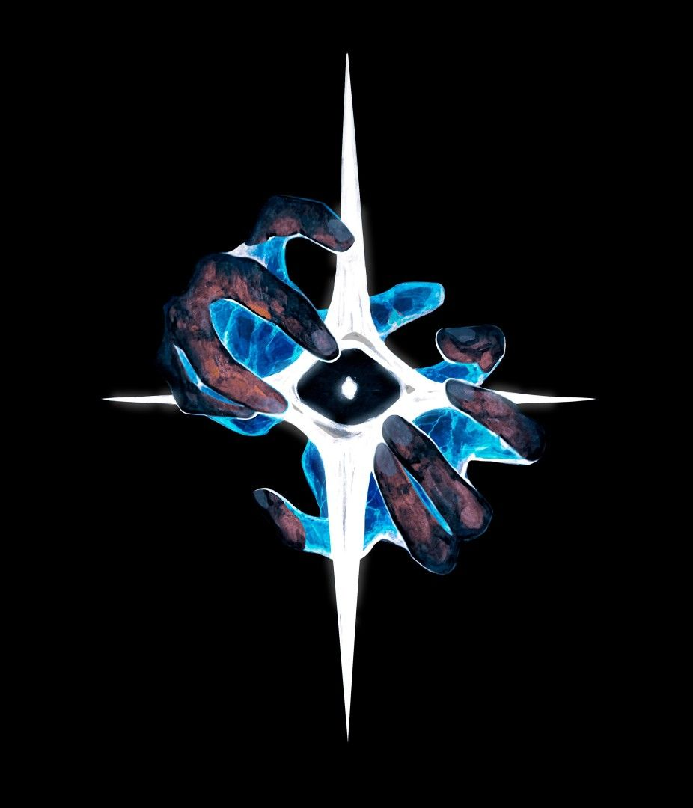

Benvenuti in Aethelgard's Fall
Il nuovo action RPG dark fantasy targato Arcanum Games in arrivo nel 2026.

Una terra sull'orlo del collasso
In un mondo frammentato da guerre arcanali ed entità primordiali, starà a te plasmare il destino del regno di Aethelgard. Affronta mostri leggendari, padroneggia la magia della cronomanzia ed esplora rovine dimenticate.
Caratteristiche del Gioco
| Caratteristica | Descrizione |
|---|---|
| Combattimento Fluido | Sistema di combattimento dinamico basato su schivate, magie e combo elementali. |
| Mondo Aperto Dark Fantasy | Quattro regioni esplorabili piene di segreti, dungeon e boss facoltativi. |
| Scelte e Conseguenze | Finali multipli in base alle alleanze stretta con i Custodi. |